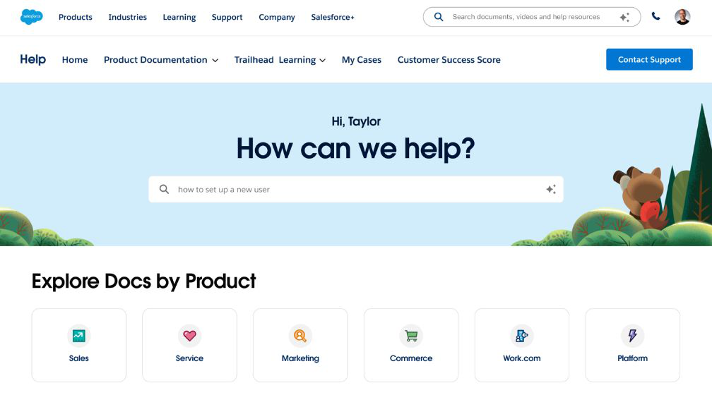
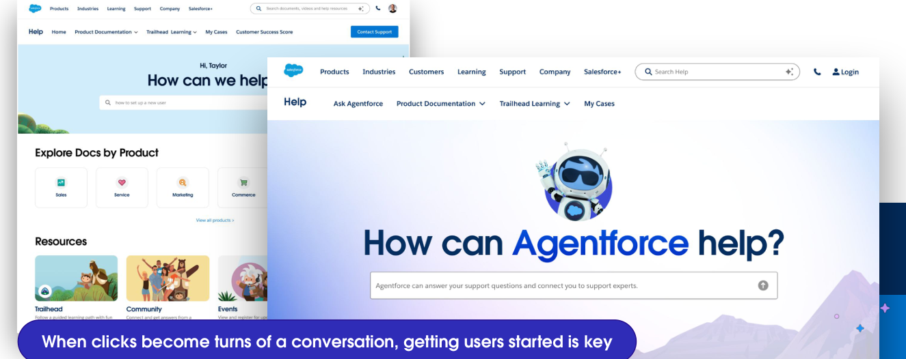
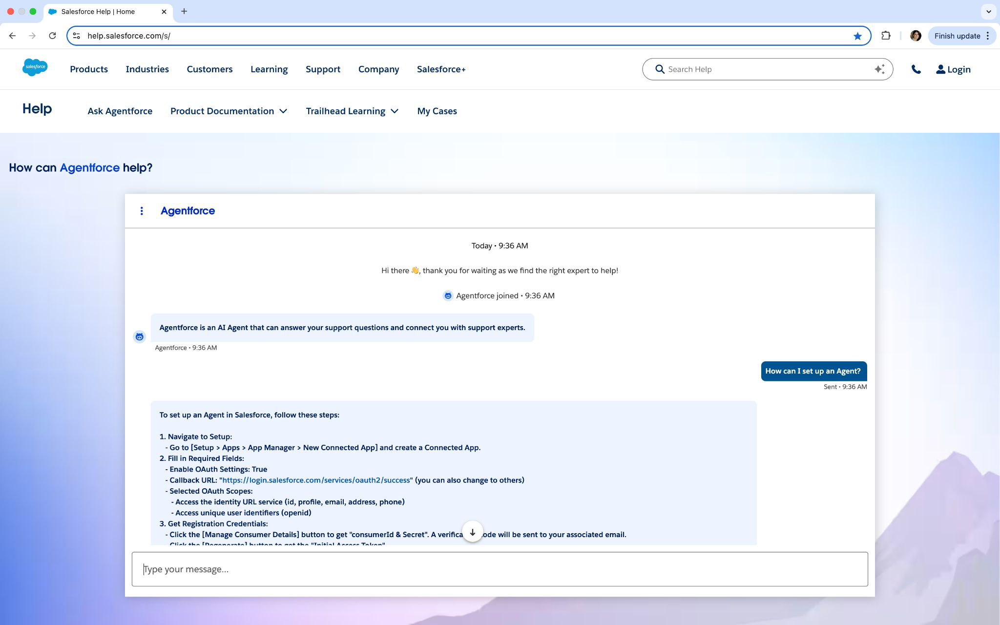

Built for a different era of self-service.
Salesforce Help wasn't broken — it was built for a different era. Customers made 60 million visits a year, sifted through 755,000 articles, and still opened 2 million support cases because self-service didn't get them to an answer. Chat existed, but it was buried, limited, and disconnected from where help was actually needed.
Conversation, not navigation, would be the interface.
Working with our Product VP (now SVP), I called it early: conversation — not navigation — would be how customers experienced and judged Agentforce. In late October 2024, I led a design sprint that produced the vision, designs, and committed plans for a conversation-first help experience, and socialized them widely — before anyone asked for it.

Customer Zero, and five days on the clock.
At Agentforce Kick-Off, Marc Benioff named Help.Salesforce.com Agentforce's live "Customer Zero" — the company's own proof point, in front of the market. The brief was blunt: redesign the UI, 5 days to lock specs, a month to ship. The Messaging and Customer Success teams became, in the retro's words, "one team, overnight." I led design for the 15-person founding group.
A search box became a conversation.
We replaced the search box with a conversational Agentforce interface, front and center — clicks became turns of a dialogue.


Measured on the site's own public counter, the live experience has now powered 4.75M+ Agentforce conversations — chat + Agentforce combined, since October 2024 (as of July '26). Making chat the primary interface set the stage for the voice agents that came next, work I continued as a named co-author on Salesforce's conversational roadmap.
The strategy behind it — five mindset shifts, from navigation→conversation to building features→designing outcomes — reached customers at TDX. I co-authored that presentation; Emily Winslow and Nimma Bhusri delivered it on stage.
A bet on how AI actually gets adopted.
This wasn't a redesign. It was a bet on how AI products get adopted — made months early, then executed at founding-team speed once the moment demanded it. Treating a help center as a growth engine, not a cost center: the same product-led instincts, applied to reshape how millions of enterprise customers met AI for the first time.